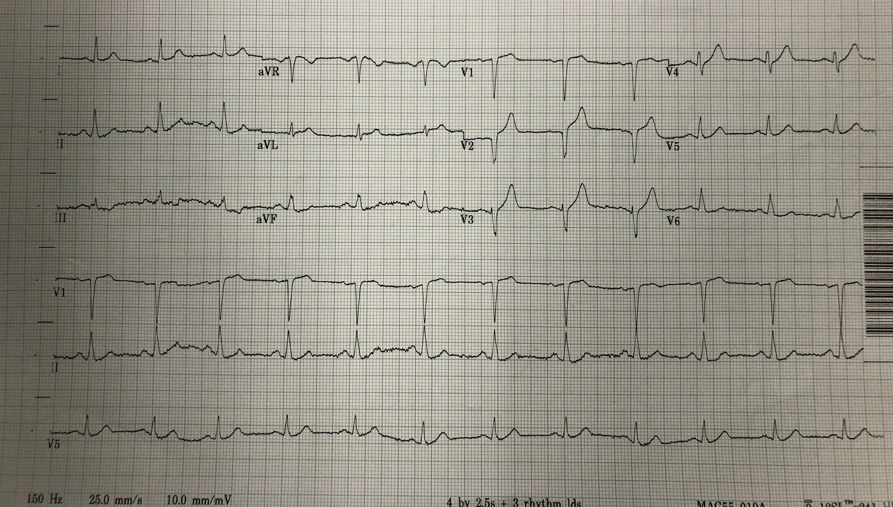
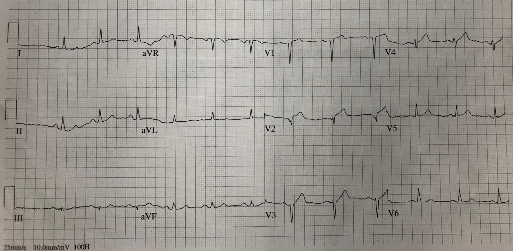
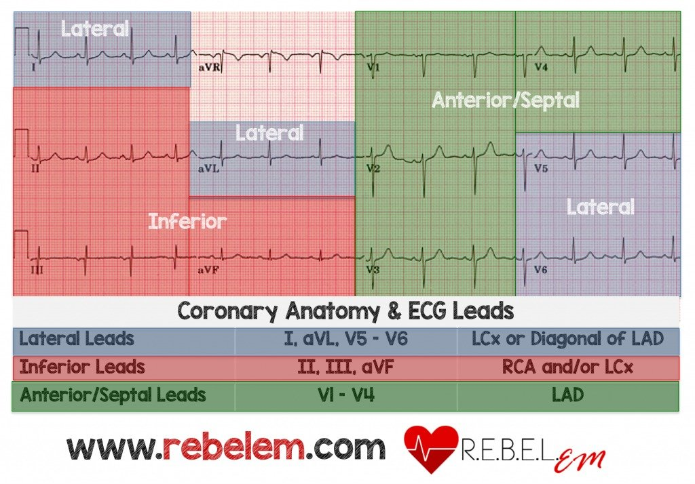
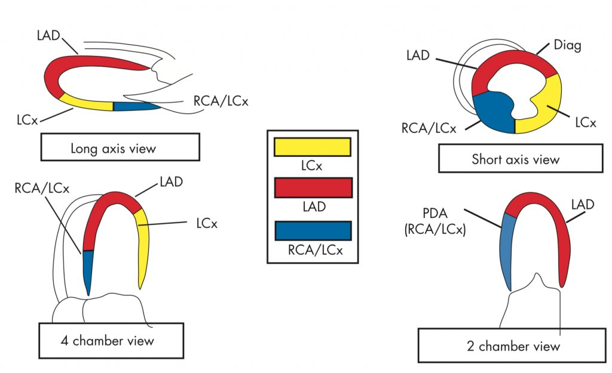
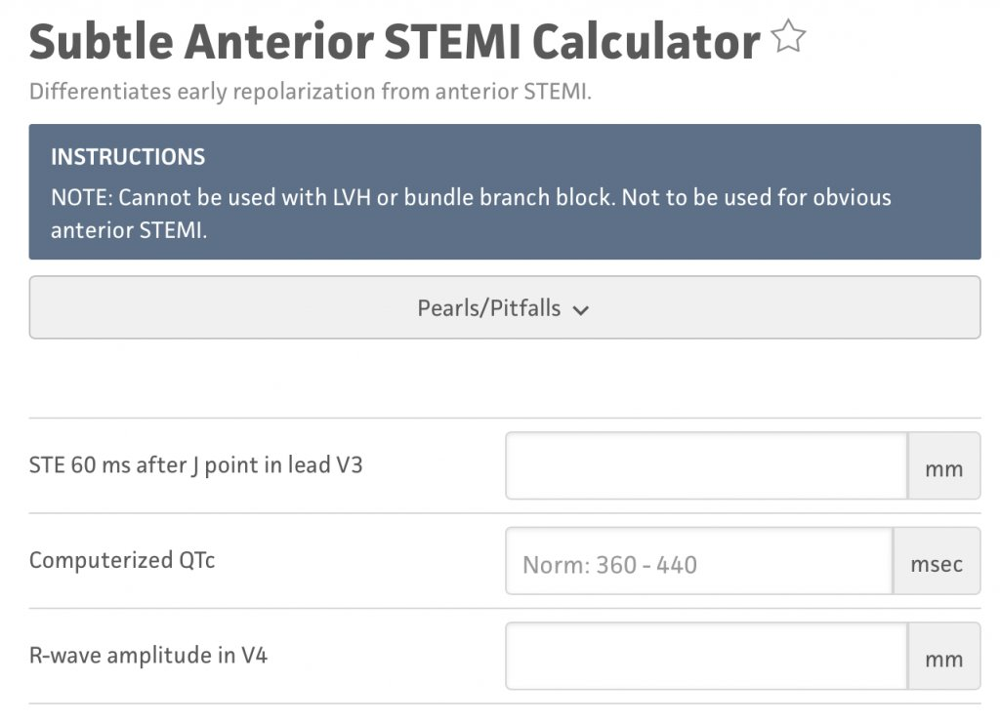
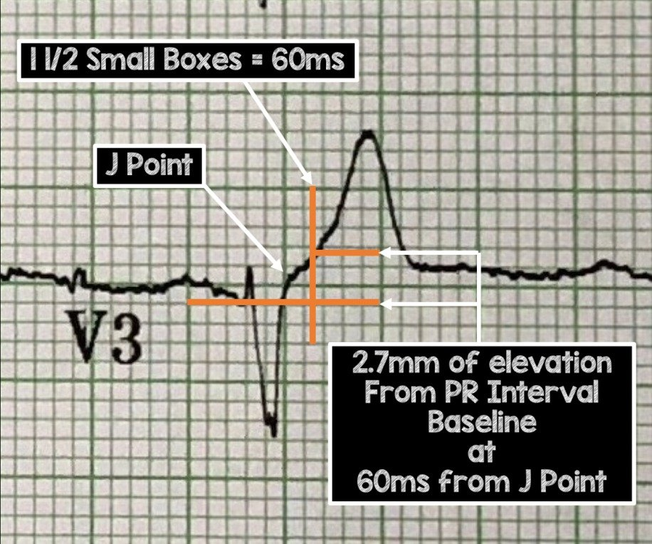
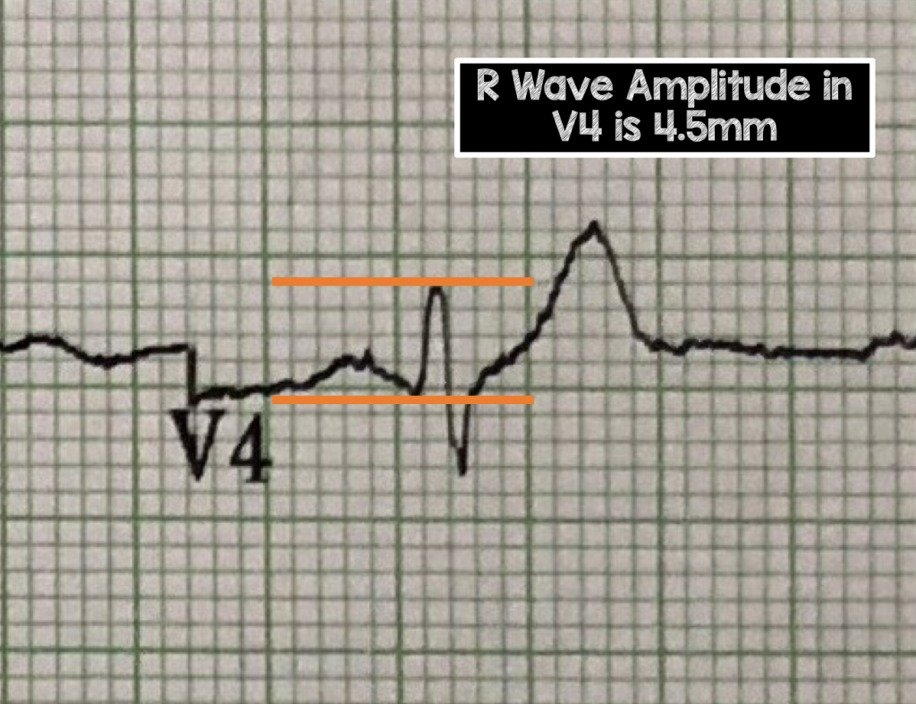
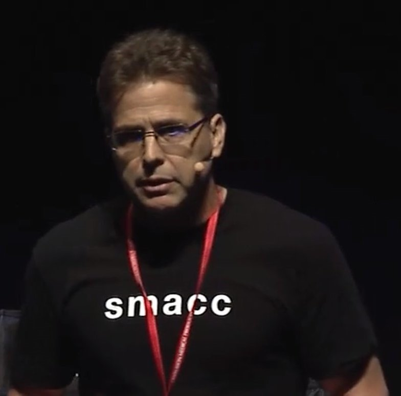

30/04/2018 — Đau ngực, nghiệm pháp gắng sức “âm tính”, siêu âm tại giường (POCUS) và các phương trình điện tâm đồ — Một ca bệnh của Salim Rezaie (R.E.B.E.L. EM)
Bản dịch tiếng Việt của bài "Chest Pain, “Negative” Stress Tests, POCUS, & ECG Equations — A Case from Salim Rezaie (R.E.B.E.L. EM)" – Dr. Smith’s ECG Blog. Giữ nguyên toàn bộ 9 hình ảnh của bản gốc.
Ca bệnh này do Salim Rezaie (@srrezaie) đăng
Chest Pain, “Negative” Stress Tests, POCUS, & ECG Equations (Đau ngực, nghiệm pháp gắng sức “âm tính”, siêu âm tại giường và các phương trình điện tâm đồ)
Cuối bài có phần bình duyệt (peer review) của tôi, nên chúng tôi cùng đăng!!

Đau ngực, nghiệm pháp gắng sức “âm tính”, siêu âm tại giường (POCUS) & các phương trình điện tâm đồ
Tác giả: Salim Rezaie
Tôi đang làm một ca trực bận rộn ở khoa cấp cứu (ED), như nhiều
người trong chúng ta vẫn làm, và bệnh nhân tiếp theo tôi sắp khám là một người nam 57 tuổi
không có bệnh lý nội khoa gì đáng kể, than đau ngực. Tôi nhớ mình đã nghĩ
khi bước vào phòng rằng anh này trông tái xám và vã mồ hôi… trông anh ấy không
ổn chút nào. Anh là một nhân viên cấp cứu ngoài viện (paramedic), kể với tôi rằng anh bị đau ngực lúc có lúc không
trong vài tháng qua. Anh vừa làm nghiệm pháp gắng sức (stress test) hai
tháng trước và kết quả “âm tính”. Hôm nay anh đang sửa sang bể bơi nhà mình thì
xuất hiện cảm giác khó chịu ở ngực giống như những lần lúc có lúc không trong
vài tháng qua, nhưng hôm nay cơn đau cứ không chịu dứt. Trong đầu,
anh nghĩ có lẽ đây là một vết loét và chỉ cần uống chút Pepcid là đỡ. Anh được
gắn monitor theo dõi và được ghi một điện tâm đồ…
Bệnh nhân trong ca này đã đồng ý
cho phép chia sẻ câu chuyện và các hình ảnh liên quan, với hiểu biết rằng những
thông tin này sẽ được dùng cho mục đích giáo dục.


là nhịp xoang bình thường và nhồi máu vách không xác định được tuổi.
Nhìn kỹ hơn ở các chuyển đạo V2 và V3, tôi hình dung mình đang thấy có chút ST
chênh lên.
Vì bệnh nhân vã mồ hôi, tôi nghĩ đây
là một STEMI thành trước đang tiến triển. Vì vậy tôi yêu cầu ghi điện tâm đồ thứ hai và nhanh chóng
chạy đi lấy máy siêu âm để làm siêu âm tại giường (POCUS) tìm
rối loạn vận động thành.
Điện tâm đồ thứ 2 đã được ghi, nhưng tôi
mãi về sau mới được xem, vì có báo động Code Blue vang
lên trên loa. Nhân tiện, đây là điện tâm đồ thứ 2…


Một lần nữa, máy điện tâm đồ đọc bản ghi này là nhịp xoang
bình thường kèm nhồi máu vách không xác định được tuổi, nhưng như bạn có thể thấy rõ,
ST chênh lên nhiều hơn ở các chuyển đạo V2 và V3 so với điện tâm đồ thứ 1.
Theo định nghĩa thì đây vẫn chưa phải là STEMI thành trước (không đạt tiêu chuẩn milimét), nhưng
nó có giá trị chẩn đoán tắc mạch vành.
Tôi chạy trở lại phòng và thấy bệnh nhân tím tái,
không đáp ứng, đang được hồi sinh tim phổi (CPR). Xe cấp cứu (crash cart) được gọi tới và trong lúc
chờ xe cấp cứu, bệnh nhân được đặt nội khí quản không
gặp khó khăn. Miếng dán khử rung được đặt lên bệnh nhân và sau một
chu kỳ CPR (≈2 phút), thấy rung thất trên
monitor. Bệnh nhân được khử rung thành công với 200J trên
máy hai pha… Monitor hiện vô tâm thu khoảng 5 – 10 giây rồi
chuyển sang nhịp nhanh xoang kèm tái lập tuần hoàn tự nhiên (ROSC).
Thật khó để có khái niệm chính xác về thời gian, nhưng
khi xem lại hồ sơ bệnh án, tất cả những điều này diễn ra trong vòng 10 phút kể từ
khi bệnh nhân đến khoa cấp cứu. Cuối cùng tôi cũng làm được POCUS sau ROSC
tại giường và quả nhiên bệnh nhân có rối loạn vận động
thành trước vách. May mắn cho cả hai chúng tôi, bác sĩ tim mạch tình cờ đang có mặt ở
khoa và đã xem POCUS tại giường. Bệnh nhân nhanh chóng được đưa đến
phòng thông tim (cath lab) và phát hiện tổn thương tắc 100% LAD đoạn gần (“The Widow
Maker” – “Kẻ tạo ra góa phụ”). Cuối cùng anh được đặt 2 stent.
Hôm sau tôi đến thăm lại bệnh nhân
và anh ấy hồi phục khá tốt. Anh được rút nội khí quản trong vòng chưa đầy 24 giờ.
Tôi cũng đã nhờ Dr. Smith đưa ra một vài nhận xét bình duyệt chuyên môn:
Điểm giảng dạy #1: Sự vô dụng của nghiệm pháp gắng sức “âm tính”
Nhiều người làm cấp cứu đã từng chăm sóc
những bệnh nhân bị hội chứng vành cấp (ACS) thực sự hoặc thậm chí ngừng tim nguyên phát
dù vừa có một nghiệm pháp gắng sức “âm tính” gần đây. Tôi biết tôi đã từng.
Quá tin vào nghiệm pháp gắng sức “âm tính” có thể là một lý do thường gặp gây chẩn đoán sai
hoặc chậm trễ trong chăm sóc bệnh nhân. Điều quan trọng cần nhớ là bệnh động mạch
vành có thể phát sinh từ những tổn thương xơ vữa chỉ gây hẹp
nhẹ, với các mảng xơ vữa không ổn định bị nứt vỡ, và không được phát hiện bằng nghiệm pháp
gắng sức tiêu chuẩn. Có một ngộ nhận rất lớn về nghiệm pháp gắng sức “âm tính” trong
ngành y tế và cả ở người không chuyên. Độ nhạy và
độ đặc hiệu của nghiệm pháp gắng sức thường được báo cáo trong khoảng 65 – 90%, tùy
theo nghiên cứu bạn đọc. Đây là hai thử nghiệm nhấn mạnh chính sự thật này:
Thử nghiệm #1 [1]: Đây
là một nghiên cứu hồi cứu hồ sơ bệnh án của 164 bệnh nhân có nghiệm pháp gắng sức “âm tính”
(122 bệnh nhân) hoặc nghiệm pháp gắng sức không xác định nhưng “bình thường” (42
bệnh nhân) trong 3 năm trước đó. 34 bệnh nhân (20,7%) trong toàn bộ
đoàn hệ được xác định có bệnh động mạch vành đáng kể trong vòng
30 ngày sau đó. Bệnh động mạch vành đáng kể được định nghĩa là nhồi máu
cơ tim xác định bằng chất chỉ điểm tim dương tính, nghiệm pháp gắng sức dương tính sau đó
thuộc bất kỳ loại nào, thông tim cần can thiệp, CABG, hoặc
tử vong do ngừng tim nội khoa. Đây là phần đáng lo ngại
… 8/34 (23,5%) có nghiệm pháp gắng sức gần nhất trong vòng 1 tháng trước
khi nhập viện, 7/34 (20,6%) làm nghiệm pháp gắng sức trong khoảng 1 – 3 tháng, và
11/34 (32,4%) làm nghiệm pháp gắng sức trong khoảng 6 tháng – 1 năm. Trong
toàn bộ đoàn hệ 164 bệnh nhân, 13 bệnh nhân (7,9%) bị nhồi máu cơ tim cấp (AMI).
Thử nghiệm #2 [2]: Đây
là một đánh giá tiến cứu trên 186 bệnh nhân được chuyển đi chụp mạch
vành vì nghi đau thắt ngực ổn định. Tất cả bệnh nhân đều có điện tâm đồ bình thường lúc
nghỉ, chưa ai từng được tái thông mạch vành, và không ai bị đái tháo
đường. 50% phụ nữ và 25% nam giới có khuyết tưới máu
hồi phục trên chụp mạch vành có kết quả điện tâm đồ gắng sức
hoàn toàn bình thường.
Điều cốt lõi của Điểm giảng dạy #1: Nghiệm pháp gắng sức được dùng để phát hiện tình trạng hẹp khít gây
cản trở dòng máu mạch vành, tuy nhiên trong bối cảnh nhồi máu cơ tim
cấp, cơ chế bệnh sinh nền tảng là nứt vỡ mảng xơ vữa và hình thành
huyết khối. Các tổn thương mạch vành có thể chưa đủ đáng kể để được
phát hiện trên nghiệm pháp gắng sức. Vì vậy, một nghiệm pháp gắng sức “âm tính” trước đó
không nên được dùng để quyết định hướng xử trí (disposition) bệnh nhân của bạn. Nếu bạn nghĩ
họ đang bị ACS, hãy xử trí họ cho phù hợp bất kể
nghiệm pháp gắng sức “âm tính” trước đó.
Điểm giảng dạy #2: Hãy dùng POCUS (hay như tôi thích gọi là Ống nghe2.0)
Vì những lý do hiển nhiên, tôi không thể ghi lại trực tiếp
hình siêu âm tại giường của bệnh nhân này, nhưng nghĩ rằng sẽ hữu ích
nếu đưa lên một số hình ảnh và video mô tả siêu âm và giải phẫu mạch vành, vì
chính điều này đã chốt chẩn đoán. Vậy trước tiên, hãy bắt đầu với điện tâm đồ và giải phẫu
mạch vành, rồi chuyển sang siêu âm tim và giải phẫu mạch vành.




Hình từ Marwick TH và
cs. [3]
Điều cốt lõi của Điểm giảng dạy #2: Hãy dùng POCUS thật rộng rãi, vì điều này sẽ cứu sống bệnh nhân. Tôi
đã bắt đầu để một máy siêu âm ngay cạnh mình khi đi trực.
Khi đánh giá bệnh nhân, tôi siêu âm tim và
phổi càng nhiều càng tốt. Tôi thậm chí không thể kể hết bao nhiêu lần điều này
đã thay đổi quyết định xử trí của tôi hoặc giúp bệnh nhân được chăm sóc nhanh hơn,
kể cả việc bệnh nhân trên được đưa đến phòng thông tim.
Điểm giảng dạy #3: Phương trình của Steve Smith phân biệt tái cực sớm với STEMI thành trước “kínđáo”
Steve Smith ở Dr Smith’s ECG Blog đã xây dựng một phép tính giúp
phân biệt tái cực sớm với STEMI thành trước kín đáo. Mấu chốt là
tỷ số giữa biên độ sóng T và biên độ sóng R. Trong STEMI thành
trước, biên độ sóng R nhỏ hơn, còn tái cực sớm có khoảng
QT ngắn hơn. Một CẢNH BÁO RẤT LỚN là phương trình này
không nên dùng ở bệnh nhân có LVH hoặc phình thất trái vì có thể gây dương tính
giả.
Phép tính: (1,196 x [ST chênh lên tại thời điểm 60ms sau điểm J ở chuyển đạo V3
tính bằng mm]) + (0,059 x [QTc tính bằng ms]) + (0,326 x [biên độ sóng R ở chuyển đạo V4 tính bằng mm)
Đừng lo, bạn không cần thuộc lòng công thức này.
Hiện nó đã có trên MD Calc


Bằng chứng [4]: Một nghiên cứu hồi cứu đã so sánh điện tâm đồ của các bệnh nhân bị STEMI thành trước “kín
đáo” (không rõ ràng) và tái cực sớm tại 2 bệnh viện. 355 STEMI thành trước
được xem xét, trong đó 143 ca
không rõ ràng và được so sánh với 171 điện tâm đồ tái cực sớm. Các
dấu hiệu chung là: trong STEMI thành trước “kín đáo”, biên độ sóng R
thấp hơn ở các chuyển đạo V2 – V4 và QTc dài hơn so với tái cực
sớm. Ngoài ra, giá trị >23,4 dự báo STEMI, còn giá trị
≤23,4 dự báo tái cực sớm. Độ nhạy, độ đặc hiệu và độ chính xác chung
của phương trình này lần lượt là 86%, 91% và
88%. Phương trình có tỷ số khả dĩ dương là 9,2 và tỷ số khả dĩ
âm là 0,1.
Đi sâu vào chi tiết điện tâm đồ (Getting ECG Nerdy):
60 mili giây (= 1,5 ô
nhỏ) sau điểm J ở V3


QTc (không hiển thị trên điện tâm đồ #1
ở trên) là 416ms


Vậy đối với bệnh nhân trên…
(1,196 x [ST chênh lên tại thời điểm 60ms sau điểm
J ở chuyển đạo V3 tính bằng mm]) + (0,059 x [QTc tính bằng ms]) + (0,326 x [biên độ sóng R
ở chuyển đạo V4 tính bằng mm)
(1,196 x [2,7mm) + (0,059 x [416ms]) + (0,326 x
[4,5mm]) = 26,3, gợi ý STEMI thành trước chứ không phải tái
cực sớm
Điều cốt lõi của Điểm giảng dạy #3: Khi bạn gặp khó khăn trong việc phân biệt giữa tái cực
sớm lành tính với STEMI thành trước “kín đáo”, đừng quên phương trình của Steve
Smith để giúp phân biệt hai tình trạng này trong bối cảnh lâm sàng
phù hợp.
Điều cốt lõi về lâm sàng & những điều tôi học được từ ca bệnh:
- Một
nghiệm pháp gắng sức “âm tính” trước đó, dù mới làm gần đây, không nên được dùng để
quyết định hướng xử trí bệnh nhân của bạn. Nếu bạn nghĩ họ đang bị
ACS, hãy xử trí họ cho phù hợp bất kể nghiệm pháp gắng sức
“âm tính” trước đó. - Ở
bệnh nhân đau ngực, hãy dùng POCUS thật rộng rãi, vì điều này sẽ cứu sống
bệnh nhân - Nếu
bạn gặp khó khăn trong việc phân biệt giữa tái cực
sớm lành tính với STEMI thành trước “kín đáo”, đừng quên phương trình của Steve
Smith để giúp phân biệt hai tình trạng này trong bối cảnh lâm sàng
phù hợp
Bình duyệt chuyên môn (Expert Peer Review)


Smith’s ECG Blog
Salim thân mến,
Giờ tôi đã nhìn rõ hơn các điện tâm đồ, và cũng thấy được kết quả đọc
bằng máy tính.
Có sóng Q ở chuyển đạo V2. Vì ST chênh lên biến thể
bình thường không bao giờ có sóng Q ở V2 – V4, nên phải mặc định đây là tắc
LAD (OMI – Occlusion Myocardial Infarction – nhồi máu cơ tim do tắc) ngay cả khi không dùng
công thức.
Người ta có thể nghĩ thế này… có sóng QS ở V2, vậy đây
là nhồi máu cơ tim cũ. Và kết quả đọc bằng máy tính là “nhồi máu vách không xác định
được tuổi”. Nhưng tôi có một quy tắc cho nhồi máu cơ tim cũ với ST chênh lên kéo dài (hình thái
phình thất trái). Quy tắc này dựa trên thực tế rằng nhồi máu cơ tim cấp
có sóng T lớn so với QRS, còn nhồi máu cơ tim cũ có sóng T nhỏ.
Chẩn đoán phân biệt trên điện tâm đồ có thể bao gồm: Nhồi máu cơ tim thành trước cũ với ST chênh lênkéo dài (hình thái phình thất trái)
Quy tắc của tôi để phân biệt STEMI cấp với phình
thất trái thực ra chỉ phân biệt một cách đáng tin cậy giữa:
- Một bên là STEMI
cấp - Bên kia là STEMI
bán cấp hoặc phình thất trái
Quy tắc là gì?
- Thứ nhất,
phải có ST chênh lên - Thứ hai,
chẩn đoán phân biệt trên điện tâm đồ phải là phình thất trái (nhồi máu cơ tim cũ với ST chênh lên
kéo dài) với STEMI cấp - Không nên
dùng quy tắc này cho tái cực sớm với STEMI cấp. Ngược lại,
nếu chẩn đoán phân biệt là phình thất trái với STEMI cấp, thì bạn KHÔNG nên dùng
công thức tái cực sớm
Khi nào nên đưa phình thất trái vào chẩn đoán phân biệt trên điện tâm đồ?
Chủ yếu là khi có sóng Q hình thành rõ,
với ít nhất một sóng QS, ở V1 – V4. Sóng QS được định nghĩa là không có
bất kỳ sóng R hay sóng r nào cao ít nhất 1mm. (Nếu có sóng R hoặc sóng r,
chúng tôi gọi toàn bộ sóng đó là sóng QR, sóng Qr hoặc sóng qR, tùy theo
độ lớn tương đối của sóng Q so với sóng R.)
Quy tắc: Nếu có một chuyển đạo trong V1 – V4 mà ở đó tỷ số T/QRS
lớn hơn 0,36, thì STEMI cấp là chẩn đoán nhiều khả năng nhất, dù STEMI bán cấp
cũng có thể. Vì cả hai đều cần đến phòng thông tim, nếu tỷ số
lớn hơn 0,36 và bối cảnh lâm sàng phù hợp (tức là khó chịu ở ngực
không giải thích được), thì có chỉ định kích hoạt phòng thông tim. Tôi đã vừa xây dựng vừa
thẩm định công thức này, với điểm cắt có độ nhạy và
độ đặc hiệu tốt.
- Xây dựng (Derivation):
Độ chính xác của công thức = 93,2% (Smith SW T/QRS Ratio Best
distinguishes Ventricular Aneurysm from Anterior Myocardial Infarction. Am
J Emerg Med 2005. PMID: 15915398) - Thẩm định (Validation):
Độ nhạy 91%, độ đặc hiệu 81% (Electrocardiographic
criteria to differentiate acute anterior ST-Elevation Myocardial Infarction
from Left Ventricular Aneurysm. Am J Emerg Med 2015. PMID: 25862248) - Các ca âm tính
giả có thời gian đau dài hơn 6 giờ. Do đó,
công thức có thể xếp những bệnh nhân đau ngực kéo dài vào nhóm phình thất trái
trong khi thực ra họ là STEMI bán cấp.
Thêm dữ liệu về nghiệm pháp gắng sức:
- Nerenberg
và cs. Impact of a Negative Prior Stress Test on Emergency Physician
Disposition Decision in ED Patients with Chest Pain Syndromes. Am J Emerg
Med 2007. PMID: 17157680 - Smith
SW và cs. Incidence of Myocardial Infarction in Emergency Department Chest
Pain Patients with a Recent Negative Stress Imaging Test. Acad Emerg Med
2005.; 12:51 [Tóm tắt] - Có
khoảng 600 lượt khám ở 300 bệnh nhân đã có nghiệm pháp gắng sức hình ảnh âm tính
trong vòng 3 năm. Có 20 ca nhồi máu cơ tim, phần lớn ở những bệnh nhân
có nghiệm pháp gắng sức âm tính trong vòng một năm gần nhất. Chúng tôi cho thấy
một nghiệm pháp gắng sức hình ảnh âm tính gần đây là bằng chứng yếu để kết luận rằng một người
quay lại khoa cấp cứu vì đau ngực không bị nhồi máu cơ tim.
Tài liệu tham khảo:
- Walker
J và cs. coronary disease in Emergency Department Chest Pain Patients with
Recent Negative Stress Testing. West J Emerg Med 2010. PMID: 21079714 - Hoilund-Carlsen
PF và cs. Usefulness of the Exercise Electrocardiogram in Diagnosing
Ischemic or Coronary Heart Disease in Patients with Chest Pain. Am J
Cardiol 2005. PMID: 15619400 - Marwick
TH và cs. Techniques for Comprehensive Two Dimensional Echocardiographic
Assessment of left Ventricular Systolic Function. Heart 2003. PMID: 14594869 - Smith
SW và cs. Electrocardiographic Differentiation of Early Repolarization
From Subtle Anterior ST-Segment elevation Myocardial Infarction. Ann Emerg
Med 2012. PMID: 22520989
Xem thêm về chủ đề này:
- Smith’s
ECG Blog: Ten (10) Examples of Hyperacute T-waves in
Lead V2 (a few in V3), due to acute LAD Occlusion (Mười ví dụ về sóng T tối cấp ở chuyển đạo trước tim do tắc LAD cấp) - Smith’s
ECG Blog: 12 Cases of Use of a 3- and 4-Variable
Formulas to Differentiate Normal STE from Subtle LAD Occlusion (Mười hai ca dùng công thức ba biến và bốn biến để phân biệt ST chênh lên bình thường với tắc LAD kín đáo)